<!DOCTYPE html>
<html lang="en">

<head>
	<meta charset="utf-8">
	<title>Clavrit</title>
	<meta name="viewport" content="width=device-width, initial-scale=1.0" />
	<meta name="description" content="" />
	<meta name="author" content="http://webthemez.com" />
	<!-- css -->
	<link href="css/bootstrap.min.css" rel="stylesheet" />
	<link rel="stylesheet" href="https://unpkg.com/aos@next/dist/aos.css" />
	<link href="css/fancybox/jquery.fancybox.css" rel="stylesheet">
	<link href="css/jcarousel.css" rel="stylesheet" />
	<link href="css/flexslider.css" rel="stylesheet" />
	<link href="css/style.css" rel="stylesheet" />
	<link href="css/blog.css" rel="stylesheet" />

	<!-- HTML5 shim, for IE6-8 support of HTML5 elements -->
	<!--[if lt IE 9]>
      <script src="http://html5shim.googlecode.com/svn/trunk/html5.js"></script>
    <![endif]-->

</head>

<body>
	<div id="wrapper">
		<!-- start header -->
		<header>
			<div class="navbar navbar-default navbar-static-top">
				<div class="container">
					<div class="navbar-header">
						<button type="button" class="navbar-toggle" data-toggle="collapse"
							data-target=".navbar-collapse">
							<span class="icon-bar"></span>
							<span class="icon-bar"></span>
							<span class="icon-bar"></span>
						</button>
						<a class="navbar-brand" href="index.html"></a>
					</div>
					<div class="navbar-collapse collapse ">
						<ul class="nav navbar-nav">
							<li><a href="index.html">Home</a></li>
							<li><a href="services.html">Services</a></li>
							<li><a href="portfolio.html">Portfolio</a></li>
							<!-- <li class="active"><a href="pricing.html">Resources</a></li> -->
							<li class="dropdown">
								<a style="background-color: transparent; color: white" class="dropdown-toggle"
									data-toggle="dropdown" href="#">Resources <span class="caret"></span></a>
								<ul class="dropdown-menu">
									<li>
										<a class="d2" href="blogs.html">Blogs</a>
									</li>
									<!-- <li><a class="d2" href="caseStudies.html">Case Studies</a></li> -->
								</ul>
							</li>
							<li class="dropdown">
								<a style="background-color: transparent; color: white" class="dropdown-toggle"
									data-toggle="dropdown" href="#">Company <span class="caret"></span></a>
								<ul class="dropdown-menu">
									<li>
										<a class="d2" href="about.html">About Us</a>
									</li>
									<li><a class="d2" href="career.html">Career</a></li>
									<li><a class="d2" href="contact.html">Contact Us</a></li>
								</ul>
							</li>
						</ul>
					</div>
				</div>
			</div>
		</header><!-- end header -->
		<section id="inner-headline" style="padding: 0%;">
			<div class="container">
				<div class="row">
					<div class="col-lg-12">
						<h2 class="pageTitle">Blogs</h2>
					</div>
				</div>
			</div>
		</section>

		<div style="background-color: white; width: 100%; padding: 0%;" class="container">
			<div style="font-size: large;" class="col-md-9 col-md-offset-2 col-xs-20">
				<div style="font-size: medium;" class="mainheading">

					<h1 class="posttitle">Serverless architecture in Java</h1>
				</div>

				<!-- Begin Post Content -->
				<div class="article-post">
					<p>
						Serverless architecture will allow developers to build and run applications without managing servers. By using this approach developers  can able to concentrate on logic and product development  rather than server configuration. In this article we will look how we can deploy code without managing servers.
					</p>
					<h3>Advantages of Serverless architecture:</h3>
					<p><ul>
						<li>Better scalability</li>
						<li>Coding flexibility.</li>
						<li>Quick deployments and updates.</li>
						<li>Only cost of usage.</li>
						<li>No need to purchase or manage backend servers .</li>
						<li>Improved developer productivity.</li>
					</ul>
					</p>
					<p>
						<h3>
							Use cases of Serveless architecture:
						</h3>
						<span class="abc">	•	Web applications and microservices: </span>Serverless functions act as discrete, independently scalable components, offering more granular control and easier management compared to monolithic server setups
						<br><span class="abc">	•	APIs and backend services: </span> Instead of provisioning and managing server capacity, serverless functions effortlessly scale to meet API demand, providing a responsive and cost-effective backend solution.
						<br><span class="abc">	•	Data processing and transformation:  </span> : Data operations become more responsive with serverless, which activates on events or schedules, eliminating the delays and inefficiencies associated with persistent server-based processing.
						<br><span class="abc">	•	Real-time file processing:  </span> Serverless architecture shines in automatically executing file transformations immediately upon upload, bypassing the need for dedicated servers that would otherwise be waiting for tasks.
						<br><span class="abc">	•	Chatbots and virtual assistants:  </span> By dynamically allocating resources based on user interaction volume, serverless ensures chatbot responsiveness without the complexity and cost of server scaling.
						<br><span class="abc">	•	Authentication and authorization: </span> Serverless functions provide a lightweight, maintainable method for user authentication, circumventing the constant resource consumption of traditional authentication servers.
						<br><span class="abc">	•	Scheduled tasks and batch jobs:  </span> Serverless excels in executing scheduled tasks with precision and without the need for a permanent server presence, reducing both resource waste and operational costs.
					</p>
					<h3>Example:</h3>
					<h4 style="margin-bottom: 10px;">Basic java program with serverless configuration:</h4>
					<h5  style="margin-bottom: 10px;">Entity:</h5>

<pre>	
    public class Book {
    private String name;
    private double price;

		public String getName() {
			return name;
		}
		public void setName(String name) {
			this.name = name;
		}
		public double getPrice() {
			return price;
		}
		public void setPrice(double price) {
			this.price = price;
		}
		public Book(String name, double price) {
			super();
			this.name = name;
			this.price = price;
		}
		public Book() {
			super();
		}
	}
</pre>
<h5 style="margin-bottom: 10px;">Controller:</h5>
<pre>
	import java.util.List;
	import org.springframework.http.MediaType;
	import org.springframework.web.bind.annotation.GetMapping;
	import org.springframework.web.bind.annotation.RequestMapping;
	import org.springframework.web.bind.annotation.RestController;
	import com.serverlessdemo.book.Book;
	
	@RestController
	@RequestMapping("/book")
	public class BookController {
		
		@GetMapping("/getbooks")
		public List<Book> getBook(){
			return List.of((new Book("Java", 12.40)),new Book("Python", 14.54));
		}
	}
</pre>
<h5 style="margin-bottom: 10px;">Handler class:</h5>
<pre>
	import java.util.List;
	import com.amazonaws.services.lambda.runtime.Context;
	import com.amazonaws.services.lambda.runtime.RequestHandler;
	
	public class BookHandler implements RequestHandler<Void, List<Book>> {
	
		@Override
		public List<Book> handleRequest(Void input, Context context) {
			return List.of(new Book("Java", 12.40), new Book("Python", 14.54));
		}
	}
</pre>
<h3>Steps for AWS configuration:</h3>
<h4 style="margin-bottom: 10px;">Lambda Function creation:</h4>
<p style="margin-bottom: 5px; margin-top: 5px; font-weight: 600;"> 1.Create a account in “aws.amazon.com”and login using that.</p>
<p style="margin-bottom: 5px; margin-top: 5px;  font-weight: 600;">2.Go to AWS management console and navigate to Lambda service.</p>
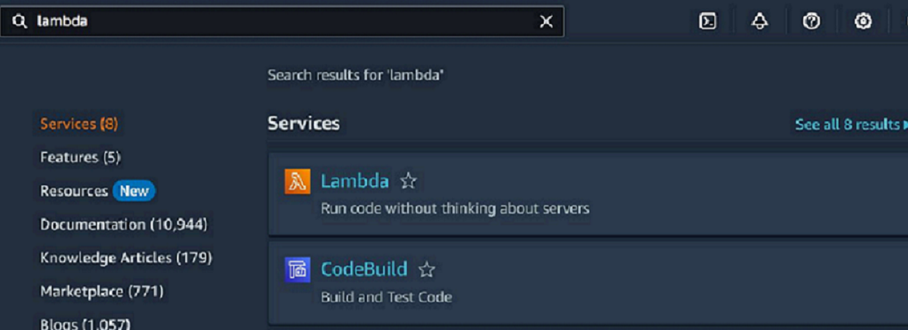
 <p style="margin-bottom: 15px; margin-top: 15px;  font-weight: 600;">3.Create a Function by clicking “author from a scratch”.</p>
 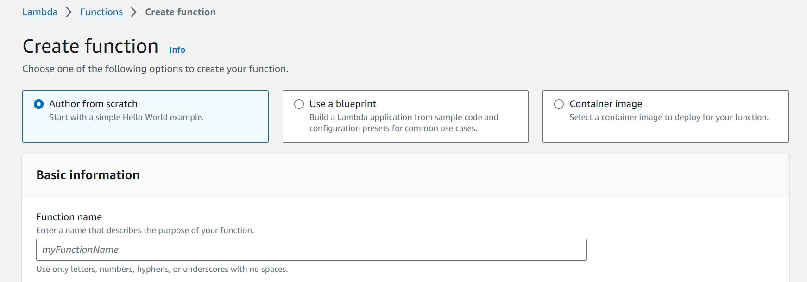
 <p style="margin-bottom: 15px; margin-top: 15px;  font-weight: 600;">4.From the Runtime settings provide the Handler information.</p>
 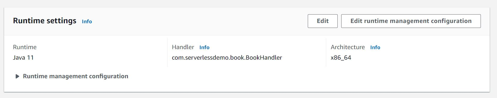
 <p style="margin-bottom: 15px; margin-top: 15px;  font-weight: 600;">5.Upload a jar file.</p>
 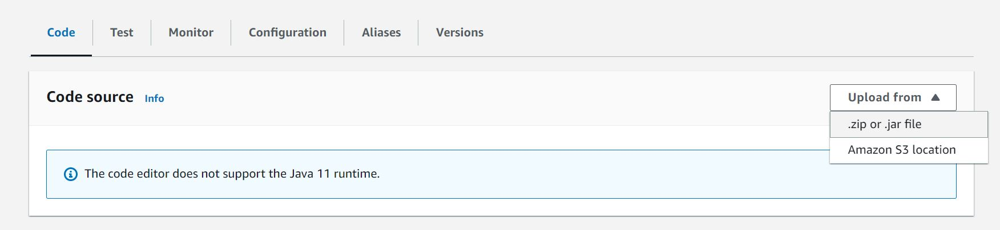
<h4>API gateway configuration:</h4>
<p style="margin-bottom: 10px; margin-top: 10px;  font-weight: 600;">1.Navigate to API gateway service.</p>
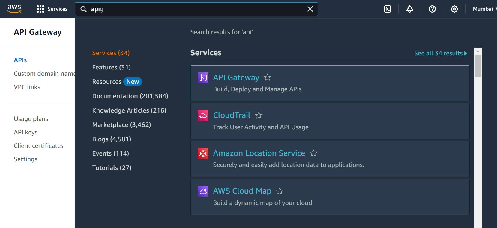
<p style="margin-bottom: 15px; margin-top: 15px;  font-weight: 600;">2.Create API by selecting Rest API option.</p>
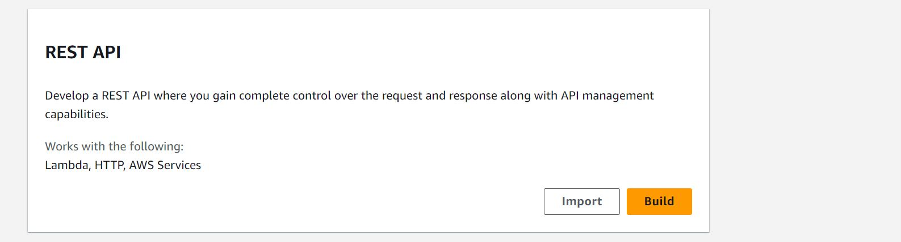<br><br>
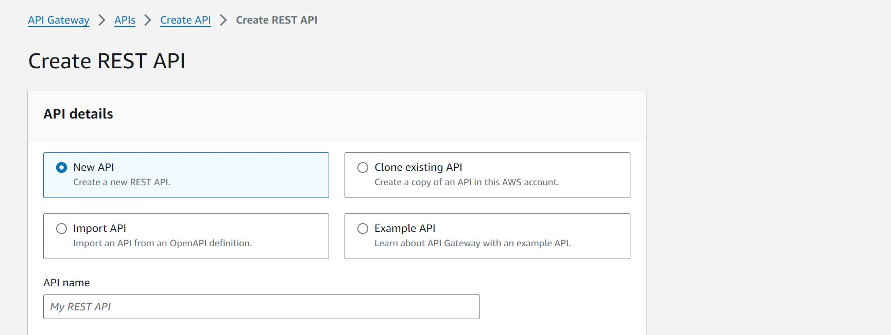
<p style="margin-bottom: 15px; margin-top: 15px;  font-weight: 600;">3.Create a resource by providing resource name.</p>
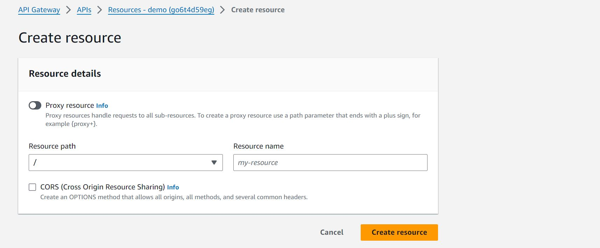
<p style="margin-bottom: 15px; margin-top: 15px;  font-weight: 600;">4.Create a method by selecting method type and integration type as “Lambda function” and provide a lambda function name.</p>
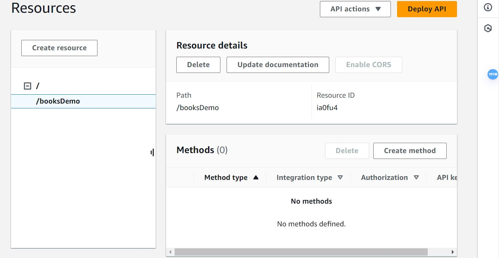
<br><br>
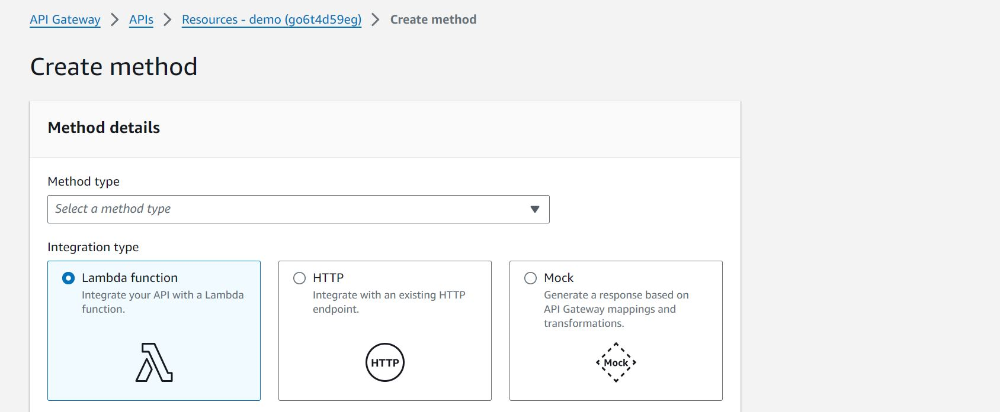
<p style="margin-bottom: 15px; margin-top: 15px;  font-weight: 600;">5.Deploy API by selecting stage.</p>
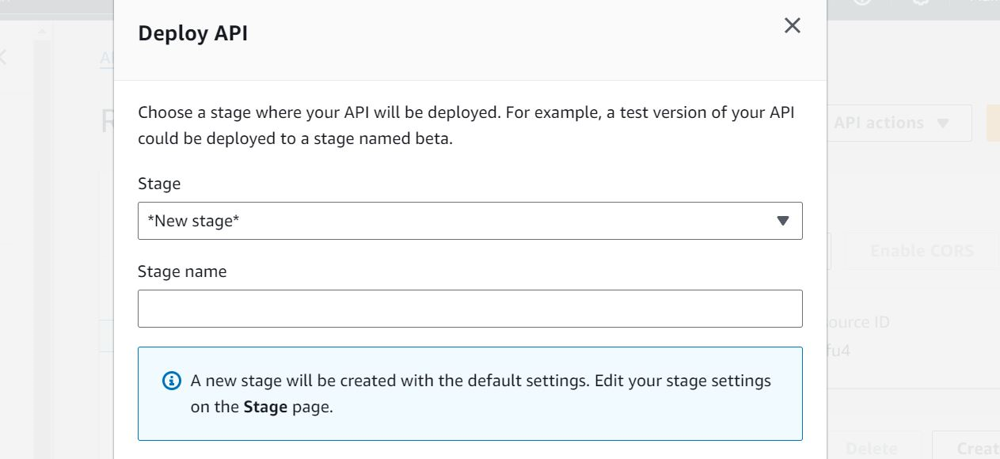
<p style="margin-bottom: 15px; margin-top: 15px;  font-weight: 600;">6.Gateway will provide a API link.</p>
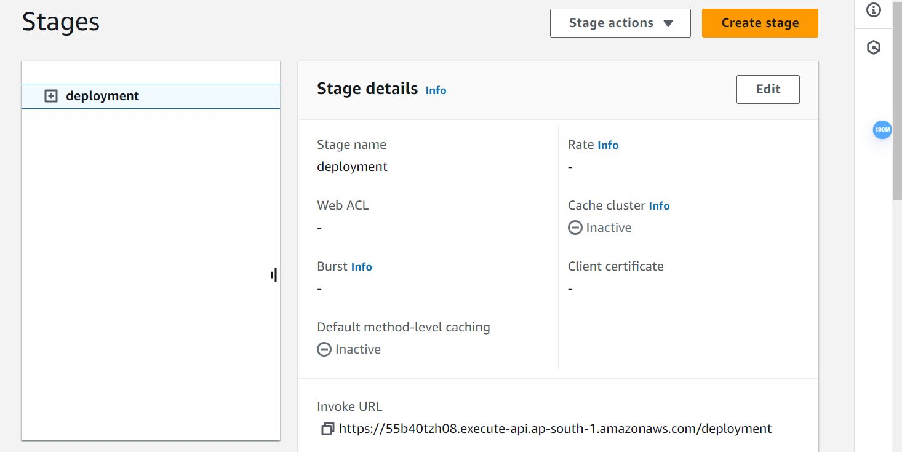
<br>
<h3>Output with tomcat server:</h3>
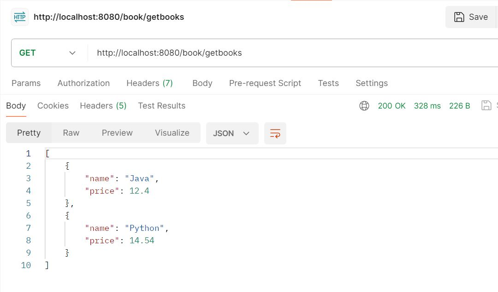
<br>
<br>
<h3>Output with Api gateway :</h3>
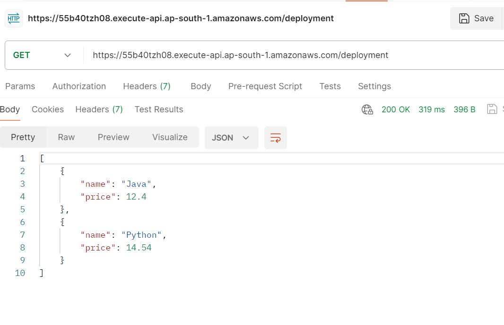
<h3 style="margin-top: 0px;margin-bottom: 10px;">Conclusion:</h3>
<p>
	Serverless architecture is useful for the applications where the users are concerned with the business side of operations rather than the IT infrastructure management. It also helps in boosting productivity and increase efficiency in any organization.
</p>
</div>				
			</div>
		</div>
		<footer style="padding-top: 20px;">
			<div class="container">
				<div class="row" style="margin: 0px;">
					<div class="col-lg-4" id="contact">
						<div class="widget">
							<h5 class="widgetheading">Our Contact</h5>
		
							<address style="margin-bottom: 0px;">
							  <strong>Clavrit Digital Solutions</strong><br />
							  18, Institutional Area,Prem Puri, Sector 32,<br>
							  Gurugram, Haryana,122001-India
							</address>
			 
							<p>
							  <i class="icon-phone"></i>
							  +91-9810167782<br />
					<i class="icon-phone"></i> 0124- 7177829 <br />
							  <i class="icon-envelope-alt"></i>
							  info@clavrit.com
							</p>
						</div>
					</div>
		
					<div class="col-lg-2" id="quickLinks">
						<div class="widget">
							<h5 class="widgetheading">Quick Links</h5>
		
							<ul class="link-list">
							  <li>
								<a href="services.html">Services</a>
							  </li>
							  <l >
								<a href="about.html">About Us</a>
							  </li>
							  <li>
								<a href="blogs.html">Blogs</a>
							  </li>
							  <li>
								<a href="career.html">Career</a>
							  </li>
							  <li>
								<a href="contact.html">Contact us</a>
							  </li>
							</ul>
						</div>
					</div>
		
					<div class="col-lg-4" id="contact">
						<div class="widget">
							<h5 class="widgetheading">Latest posts</h5>
		
							<ul class="link-list">
							  <li>
								<a href="reactivejava.html"
								  >Reactive Programming Through Java</a
								>
							  </li>
			 
							  <li>
								<a href="SAPclassification.html"
								  >Classification Systems In SAP Commerce</a
								>
							  </li>
		
					<li>
					  <a href="SRGAN.html"
						>Revolutionizing Image Enhancement: A Deep Dive into SRGAN</a
					  >
					</li>
		
					<li>
					  <a href="ExploratoryTesting.html"
						>Exploratory Testing: Unleashing Creativity in Quality Assurance</a
					  >
					  </li>
							</ul>
						</div>
					</div>
					
					<div class="col-lg-2"  id="quickLinks">
					  <div class="widget">
						  <h5 class="widgetheading">Quick Links</h5>
		
						  <ul class="social-network" style="padding-left: 0px;">
							<li>
							  <a
								class="fa fa-facebook"
								data-placement="top"
								href="https://www.facebook.com/share/iBmat7SDtXvuHWrB/?mibextid=hu50Ix"
								style="font-style: italic"
								title="Facebook"
							  ></a>
							</li>
		   
							<li>
							  <a
								class="fa fa-linkedin"
								data-placement="top"
								href="https://www.linkedin.com/company/clavrit/"
								style="font-style: italic"
								title="Linkedin"
							  ></a>
							</li>
		   
							<li>
							  <a
								class="fa fa-instagram"
								data-placement="top"
								href="https://www.instagram.com/clav.ritdigitalsolutions?igsh=MWpnNDR2NTd2OGVybg=="
								style="font-style: italic"
								title="Instagram"
							  ></a>
							</li>
						  </ul>
					  </div>
				  </div>
				  <div class="col-lg-4"></div>
					
				</div>
			</div>
		
			<div id="sub-footer" style="margin-top: 0px;padding-top: 0px;">
				<div class="container">
					<div class="row" style="margin-bottom: 0;">
						<div class="col-lg-12">
						  <div class="copyright" style="text-align: center;">
							<p>
							  <span>&copy; 2019. Clavrit Digital Solutions. All Rights Reserved.</span>
							</p>
						  </div>
						</div>
		
					 
					 
					</div>
				</div>
			</div>
		</footer> 
	</div>
	<a href="#" class="scrollup"><i class="fa fa-angle-up active"></i></a>
	<!-- javascript
    ================================================== -->
	<!-- Placed at the end of the document so the pages load faster -->
	<script src="js/jquery.js"></script>
	<script src="js/jquery.easing.1.3.js"></script>
	<script src="https://unpkg.com/aos@next/dist/aos.js"></script>
	<script>
		AOS.init();
	</script>
	<script src="js/bootstrap.min.js"></script>
	<script src="js/jquery.fancybox.pack.js"></script>
	<script src="js/jquery.fancybox-media.js"></script>
	<script src="js/portfolio/jquery.quicksand.js"></script>
	<script src="js/portfolio/setting.js"></script>
	<script src="js/jquery.flexslider.js"></script>
	<script src="js/animate.js"></script>
	<script src="js/custom.js"></script>
</body>

</html>